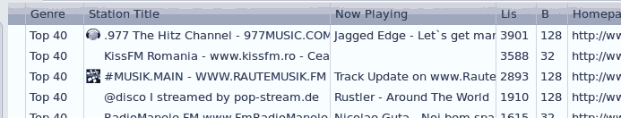

Streams / Stations
Radio stations are listed in the right pane. Usually they have a title and a description. The description is often the last played song. (This isn't updated automatically to conserve bandwidth and because live information is seldomly available.)

You can double click a station line to get it to play. Alternatively there are the play and record buttons in the menubar. You can also invoke a stations homepage, if it has one.
Actions
Context menu
Additionally most actions are available in a context menu. Right click a station entry to display it.

You can reach them in the Main menu ▸ Stations as well. The Extensions ▸ submenu there will list a few other plugin extensions.